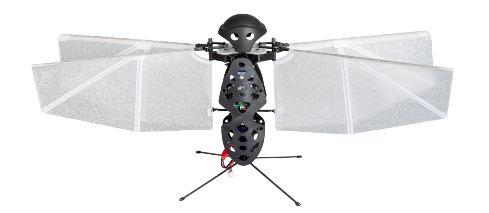
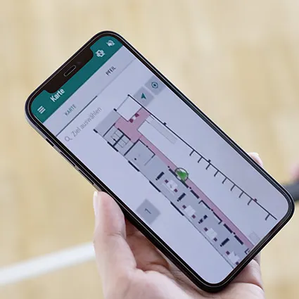
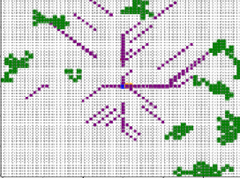

marl-uav-formation
Multi-agent UAV formation control with PyBullet, PPO/MAPPO training, and 2D/3D evaluation playback.

Klagenfurt, Austria
I’m an engineer and graduate student working on autonomous and secure systems. I study Artificial Intelligence & Cybersecurity and Autonomous Systems & Robotics at the University of Klagenfurt.
My work spans machine learning research, technical support, and engineering coordination, with a growing focus on distributed systems and security. I’m interested in systems that can coordinate, adapt, and remain reliable under real-world constraints.
last listened: Nine Types of Light by TV On The Radio.
work

Multi-agent UAV formation control with PyBullet, PPO/MAPPO training, and 2D/3D evaluation playback.

BLE indoor positioning with ESP32 anchors, RSSI calibration, Kalman filtering, and a live Flask dashboard.

Agent-based swarm simulation using local perception, pheromone trails, energy limits, and heat constraints.
writing
publications